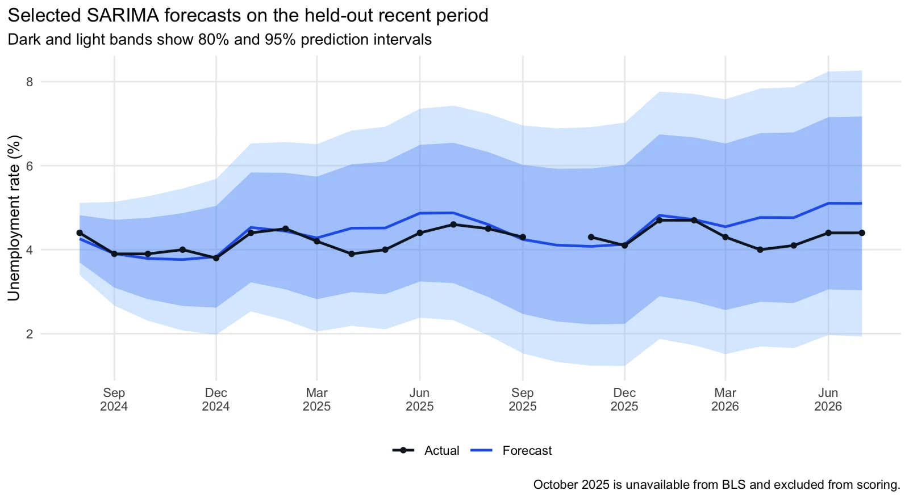
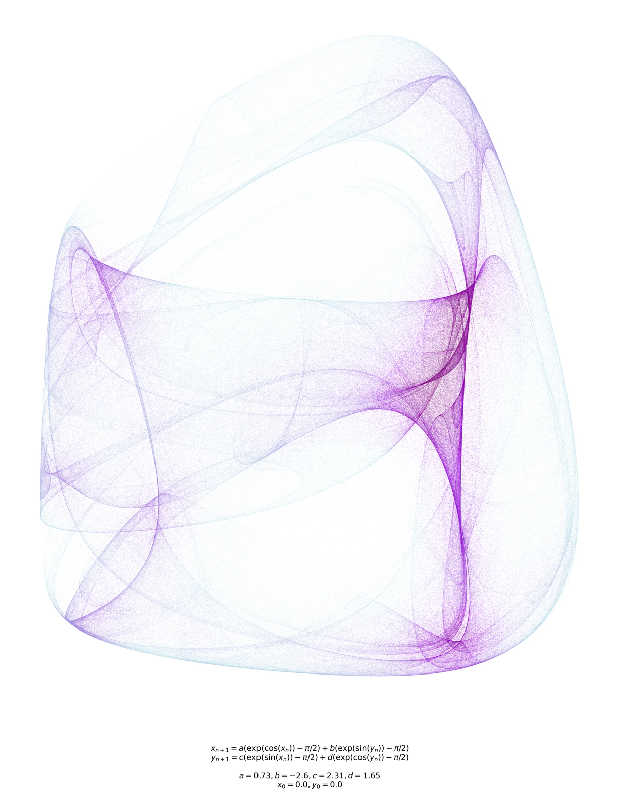
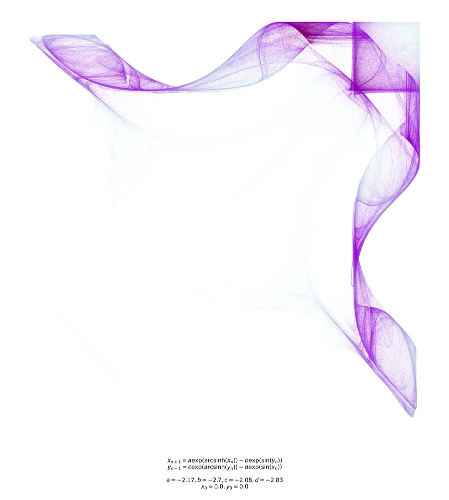
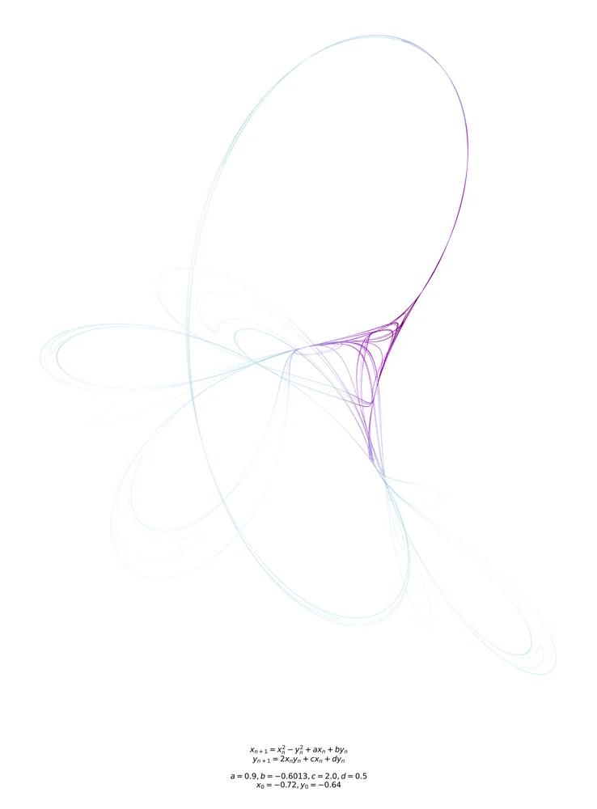
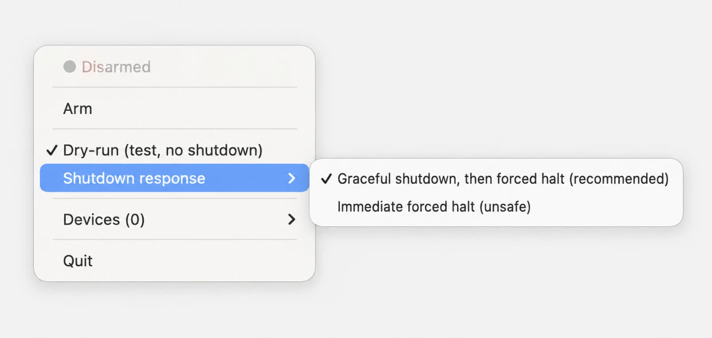

Experience
Data Analyst Intern
Jul. – Aug. 2026- Defined approximately 25 client and utilization metrics at the warehouse-column and flag level, resolving a cross-team cancellation-rate discrepancy caused by tentative schedule records.
- Built a manager-approved competing-risks analysis of 2,121 clients using cause-specific Cox models. A 10-percentage-point higher Stage-1 attendance rate was associated with lower dropout hazard at day 90 (HR 0.840) and day 365 (HR 0.936), with time-varying and influence diagnostics.
- Analyzed 23,406 expected client-weeks across 1,232 clients in PostgreSQL, finding that the weekly share receiving therapy fell from 86–89% to 78–81% while monthly reach remained near 88%.
Projects
U.S. Unemployment Rate Forecasting
R · R Markdown
A reproducible forecasting study of 942 observed monthly BLS unemployment rates across 943 calendar months from 1948 through 2026. Pre-validation seasonal-strength, KPSS, and ACF/PACF diagnostics define 24 SARIMA specifications, compared with ETS across 10 rolling 24-month windows before the selected model is scored on a held-out evaluation period. The selected SARIMA improves holdout MAE but not RMSE versus naive and drift benchmarks, showing how rankings change across loss functions and economic regimes; the analysis also preserves a source-documented missing month and reports interval and residual diagnostics.
Chaotic Attractors: Computational Exploration & Visualization
Python · NumPy · SciPy · Matplotlib


A Python package for seeded stochastic search across discretized 4-parameter systems. Short trajectories discard burn-in and reject collapse or divergence; full survivors are checked for recurrence and positive finite-time largest Lyapunov estimates, ranked by geometry, and colored by point density through subsampled Gaussian KDE. Includes 9 systems (5 established forms, 4 custom variants), CLI and API entry points, and PNG/PDF/SVG export.
USB Watchdog: macOS Hardware-Tamper Monitor
Python · Bash · C · IOKit
A macOS menu-bar tamper alarm that records USB, Thunderbolt, SD-card, and external-display inventories, then initiates a selected shutdown response when a persistent change is observed. A native IOKit listener requests immediate USB checks while independent polling, bounded probe retries, and wake-time revalidation preserve coverage when event monitoring is unavailable. The Python GUI, Bash engine, and native C helper are regression-tested for event failover, probe failures, wake handling, and both shutdown policies; the system is a physical-change tripwire, not device authentication.